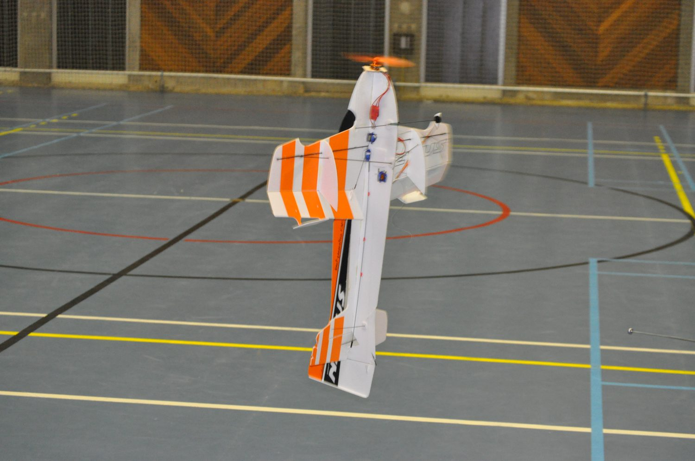
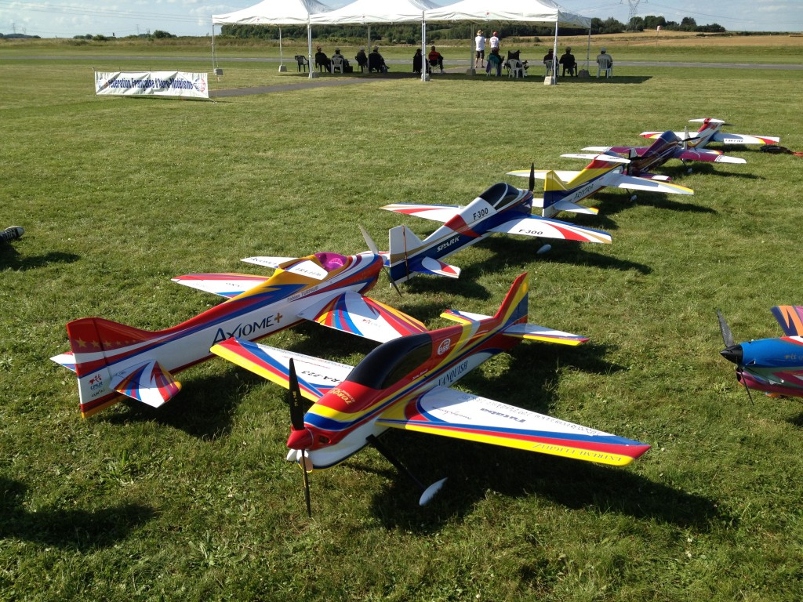

Où voler avec mon drone ou avion
Vous venez d’acheter ou de construire votre nouveau modèle et il vous tarde de l’essayer. Mais une question vous trotte dans la tête “Ou donc faire voler mon modèle ?”. Dans cet article je vais vous donner quelques conseils pour répondre à cette question.
Indoor ou Outdoor quel est la différence ?
Indoor
La pratique de l’indoor se fera pour de petits modèles électrique très léger. Ces modèles sont destinés exclusivement à l’indoor où (l’outdoor par vent nul !). Le gros avantage de l’indoor, c’est que l’on peut voler par tous les temps étant donné que nous sommes à l’intérieur. Mais il vous sera difficile de pratiquer cette pratique si vous ne faites pas partie d’un club disposant d’un accès à une salle.
De plus, cette pratique est moins accessible aux débutants, car elle demande une grande précision pour éviter les murs et le plafond.

Outdoor
L’outdoor est la pratique la plus rependue de l’aéromodélisme, elle consiste tout simplement à voler en extérieur. Les modèles utilisés sont de tout type, on peut trouver du thermique (moteur essence), électrique, turbine. Le gros inconvénient de l’outdoor c’est que l’on est très dépendant de la météo.

Les réglementations
La pratique de l’aéromodélisme que ce soit drone, avion, hélicoptère, … est soumise à une réglementation très stricte. Vous ne pourrez pas voler où que vous le souhaitez. Le survol d’agglomérations, sites sensibles (centrale, site militaire, …) est interdit. Vous aurez aussi une hauteur de vol à ne pas dépasser suivant les zones.
Je vous mets ici un lien vers le site du gouvernement qui recense les zones où il est possible de voler sur une carte, ainsi que la hauteur maximum à ne pas dépasser.
Lien vers la carte intéractive
Attention, cependant si le terrain repéré sur la carte est praticable. Ce n’est pas pour autant que vous aurez l’autorisation de voler. Il est recommandé de demander au propriétaire du terrain une autorisation. Pour les parcs, je vous conseille de voler dans des endroits dégagés et avec personne autour de vous, un accident est vite arrivé. Vérifier sur la carte que le parc n’est pas interdit de vol. Il est conseillé d’être au moins inscrit à la FFAM (Fédération française d’aéromodélisme), car elle vous assurera en cas d’accident (Allez voir mon article sur Faut il s’inscrire à la FFAM.
Il ne serait que trop conseillé aux personnes débutantes de s’inscrire dans un club. Les clubs disposent de leur propre terrain souvent accessible à tout moment. Mais ils fournissent aussi des cours de pilotage, des bonnes pratiques pour la sécurité, … Je vous mets ici un lien sur mon article Les avantages d’être inscrit dans un club de modélisme.
Checklist pour voler
- Terrain aux normes
- Hors agglomération et terrain sensible
- Aucune ligne électrique à proximité
- Terrain dégagé
- Personnes autour (Survol de personne strictement interdite)
- Météo
- Peu ou pas de vent (Aucun vent préviligié pour les débutants)
- Soleil ou nuageux
- Nettoyer après son passage
Conclusion
Pour conclure, il peut être intéressant de s’inscrire dans un club afin de ne pas avoir de contrainte avec le terrain et d’apprendre les bases du modélisme (sécurité, pilotage, …)Pour les plus avertis, il est possible de trouver un terrain dégagé sans que cela ne dérange.